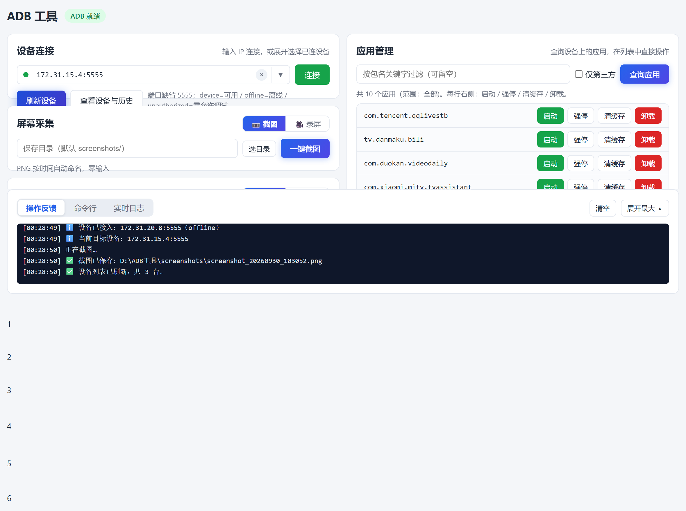
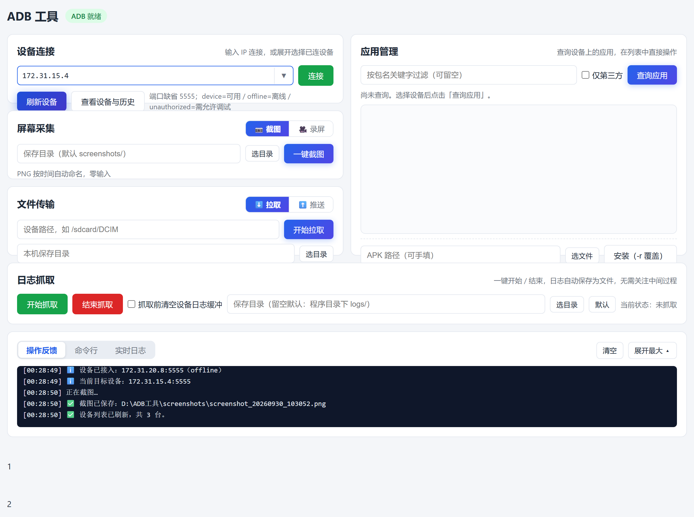
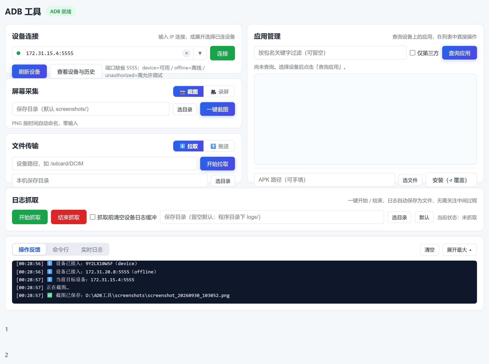
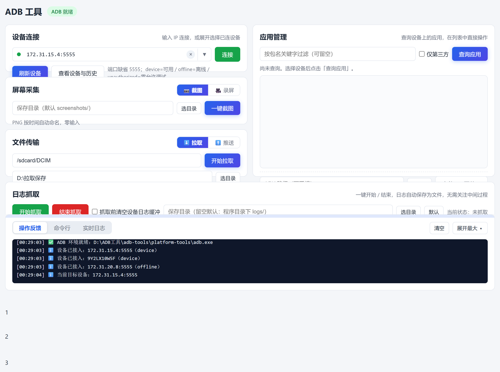
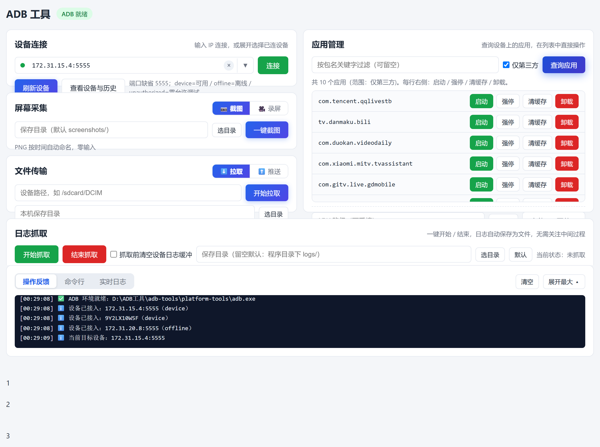
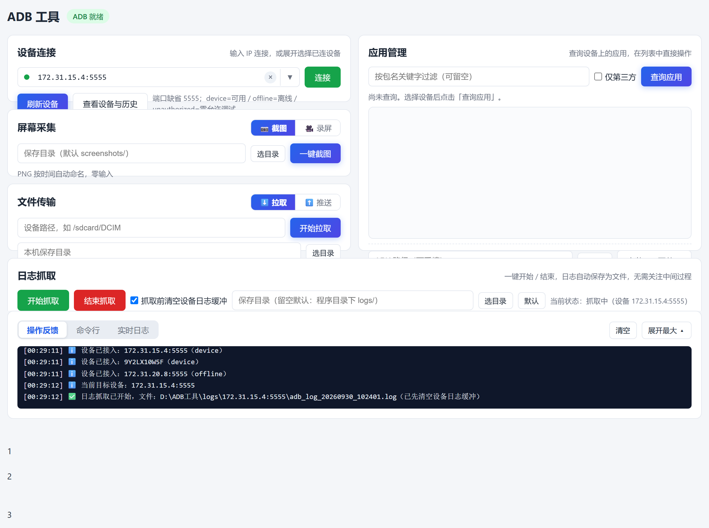
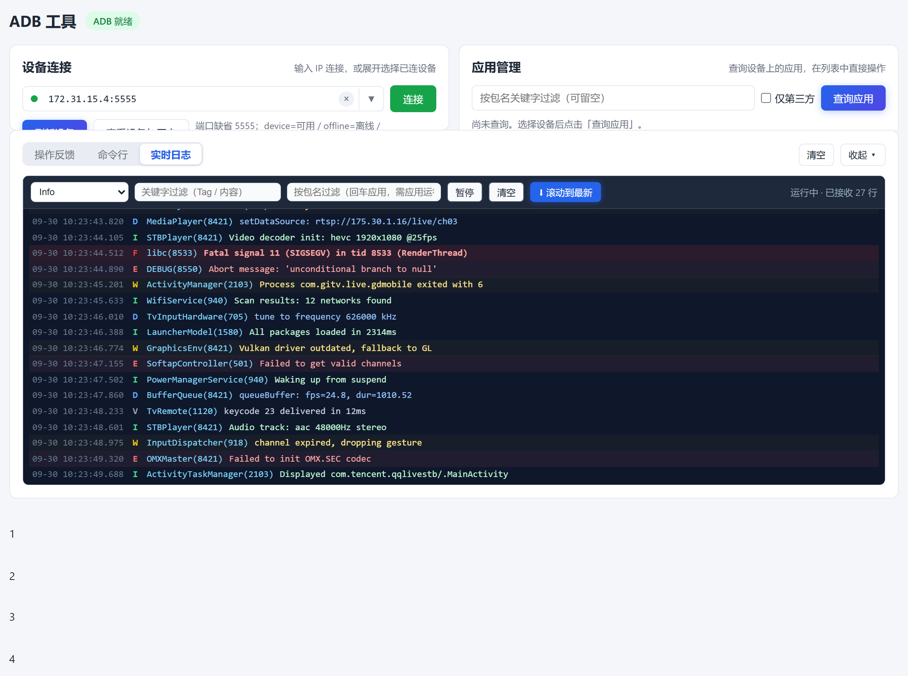

ADB-LOG-HELPER
ADB 工具
图解操作手册
PC 桌面版 · 基础功能速用
版本 V1.9Windows 10 / 11
每页一个功能：看图找红圈 ❶❷❸ → 在软件里点同一个按钮
无需任何命令行基础
ADB 工具 图解操作手册界面地图
先看这张图：每个区域是干嘛的
软件主界面分 6 个区域。红圈编号 = 本手册章节号，想用哪个功能翻到哪一章。

|
❶ 设备连接 —— 连电视/手机，选当前设备（第 1 章） |
❹ 应用管理 —— 查/启动/卸载应用，装 APK（第 4 章） |
|
❷ 屏幕采集 —— 截图、录屏（第 2 章） |
❺ 日志抓取 —— 存一份日志文件发给别人（第 5 章） |
|
❸ 文件传输 —— 设备和电脑互拷文件（第 3 章） |
❻ 底部面板 —— 操作结果反馈 / 命令行 / 实时日志（第 6 章） |
💡 记住一条
顶部输入框里显示的是哪台设备，所有操作就作用于哪台设备。
ADB 工具 图解操作手册01 · 准备与连接
01准备与连接（第一次使用）
电脑：Windows 10/11，和设备连同一个局域网（WiFi 或网线都行）。
电视端先打开「ADB 调试」开关（设置里找；小米电视在 设置→账号与安全→ADB 调试）。
1
第一次打开软件若弹出「ADB 环境准备」页：直接点
「开始安装 →」（自动装好，只需一次）。
2
在「设备连接」输入框 ❶ 输入电视的 IP
（电视上：设置→网络 里能查到，形如 172.31.15.4）。
3
点 ❷「连接」按钮。
框内出现设备地址 + 绿灯 = 连上了，它就是当前设备。
4
手机用 USB 线连的话：插上 → 手机上点「允许 USB 调试」
→ 点「刷新设备」→ 点输入框右侧 ▼ 在列表里点选。

▲ ❶ 输入电视 IP → ❷ 点「连接」。▼ 列表可看到所有已连设备，点击切换
⚠ 连不上时
按顺序查：电视 ADB 开关是否打开 → IP 是否变了（电视重启后会变）→ 是否同一局域网。
ADB 工具 图解操作手册02 · 截图 / 录屏
02截图 / 录屏
「屏幕采集」卡里 ❶ 两个分段按钮：📷 截图、🎥 录屏。
2
点 ❷「一键截图」，图片自动存到程序文件夹
screenshots\ 里，路径显示在底部面板。
3
要录像就点「🎥 录屏」→「开始录屏」，再点一次停止。
单段最长 3 分钟。

▲ ❶ 选模式 → ❷ 一键截图。结果见底部「操作反馈」
ADB 工具 图解操作手册03 · 文件传输
03文件传输（拉取 / 推送）
「文件传输」卡两个分段：⬇️ 拉取 = 设备文件拷到电脑；
⬆️ 推送 = 电脑文件放进设备。
拉取（设备 → 电脑）
1
❶ 填设备路径：如 /sdcard/DCIM（相册）、
/sdcard/Download（下载文件夹）。注意开头是 /。
2
❷ 点「选目录」选存到电脑哪里 → ❸ 点「开始拉取」。
推送（电脑 → 设备）
1
点「⬆️ 推送」→「选文件」选电脑上的文件 →
填设备目标路径（如 /sdcard/Download/）→「开始推送」。

▲ 拉取示例：❶ 填设备路径 → ❷ 选保存目录 → ❸ 开始拉取
ADB 工具 图解操作手册04 · 应用管理
04应用管理（查 / 启动 / 卸载 / 装 APK）
右侧「应用管理」整列。
1
❶ 过滤框输入关键字（如 weixin，可留空），
勾选 ❷「仅第三方」可隐藏系统预装应用。
2
点 ❸「查询应用」，列表每行右侧四个按钮：
启动（打开应用）、强停（卡死时用）、清缓存（清空该应用全部数据）、
卸载 —— 清缓存和卸载都会弹确认框，防误点。
3
列表底部「APK 路径」→「选文件」选电脑上的 .apk →
点「安装（-r 覆盖）」给电视装应用（升级不丢数据）。

▲ ❶ 关键字 → ❷ 仅第三方 → ❸ 查询应用；每行右侧直接操作
ADB 工具 图解操作手册05 · 日志抓取
05日志抓取（排查问题发给开发）
两键式：开始抓取 → 去设备上复现问题 → 结束抓取。
3
点 ❸「结束抓取」，日志文件路径显示在底部
「操作反馈」，把这个文件发给开发即可。

▲ ❶ 开始 → 复现问题 → ❸ 结束。日志自动存 logs\当前设备\ 按时间命名
💡 提示
勾选 ❷「抓取前清空设备日志缓冲」= 只留这次的日志，文件更干净。
想在线看日志不存文件：底部面板点「实时日志」（需先选设备）。
ADB 工具 图解操作手册06 · 底部面板
06底部面板（结果反馈 / 命令行 / 实时日志）
窗口底部固定一条面板，左侧 ❶ 三个按钮切换：
1
操作反馈（默认）：每次操作的成功/失败结果都在这里，
做完操作看一眼这里。
2
命令行：可直接敲 Windows 命令；
选中设备后输入 adb shell 回车，还能像操作设备本身一样逐条敲设备命令，exit 退出。
3
实时日志：像看直播一样实时滚动设备日志
（需先选设备），可按级别/关键字过滤、暂停。

▲ 实时日志：❶ 切模式，级别/关键字过滤，日志按级别着色
💡 小技巧
切到命令行/实时日志时面板自动升到半屏；右侧「清空」按当前模式清内容。
ADB 工具 · 图解操作手册
PC 桌面版 V1.9 ｜ 基础功能速用版
更多细节见《操作手册（文字版）》